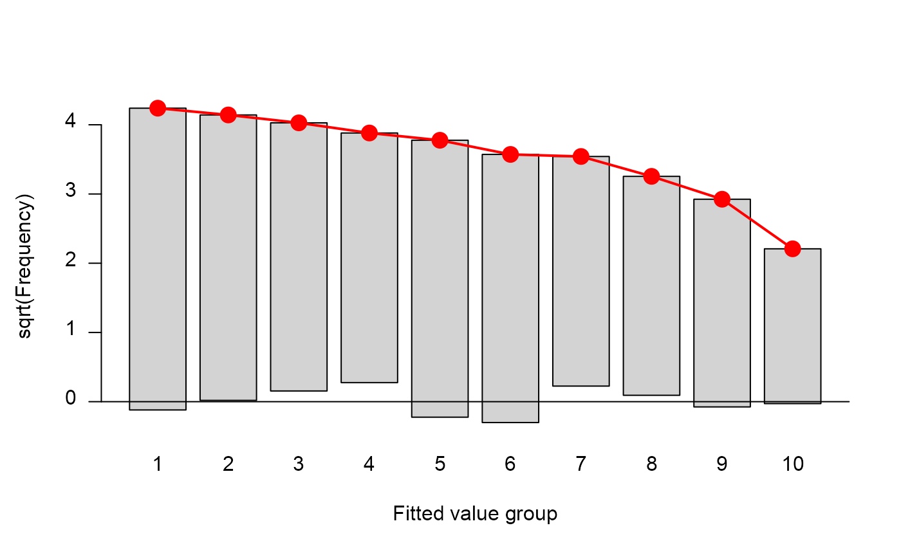
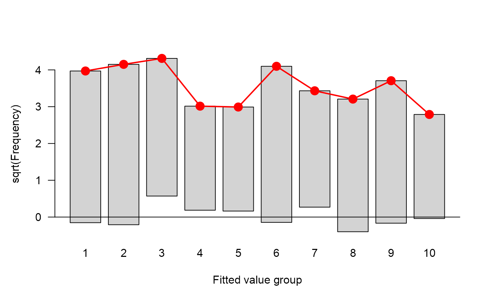

The HLtest function computes the classical Hosmer-Lemeshow (1980)
goodness of fit test for a binomial glm object in logistic regression
Value
A class HLtest object with the following components:
- table
A data.frame describing the results of partitioning the data into
ggroups with the following columns:cut,total,obs,exp,chi- chisq
The chisquare statistics
- df
Degrees of freedom
- p.value
p value
- groups
Number of groups
- call
modelcall
%% ...
Details
The general idea is to assesses whether or not the observed event rates
match expected event rates in subgroups of the model population. The
Hosmer-Lemeshow test specifically identifies subgroups as the deciles of
fitted event values, or other quantiles as determined by the g
argument. Given these subgroups, a simple chisquare test on g-2 df is
used.
In addition to print and summary methods, a plot method
is supplied to visualize the discrepancies between observed and fitted
frequencies.
References
Hosmer, David W., Lemeshow, Stanley (1980). A goodness-of-fit test for multiple logistic regression model. Communications in Statistics, Series A, 9, 1043-1069.
Hosmer, David W., Lemeshow, Stanley (2000). Applied Logistic Regression, New York: Wiley, ISBN 0-471-61553-6
Lemeshow, S. and Hosmer, D.W. (1982). A review of goodness of fit statistics for use in the development of logistic regression models. American Journal of Epidemiology, 115(1), 92-106.
See also
rootogram, ~~~
Other association tests:
CMHtest(),
GKgamma(),
woolf_test(),
zero.test()
Examples
data(birthwt, package="MASS")
# how to do this without attach?
attach(birthwt)
#> The following object is masked from package:ca:
#>
#> smoke
race = factor(race, labels = c("white", "black", "other"))
ptd = factor(ptl > 0)
ftv = factor(ftv)
levels(ftv)[-(1:2)] = "2+"
bwt <- data.frame(low = factor(low), age, lwt, race,
smoke = (smoke > 0), ptd, ht = (ht > 0), ui = (ui > 0), ftv)
detach(birthwt)
options(contrasts = c("contr.treatment", "contr.poly"))
BWmod <- glm(low ~ ., family=binomial, data=bwt)
(hlt <- HLtest(BWmod))
#> Hosmer and Lemeshow Goodness-of-Fit Test
#>
#> Call:
#> glm(formula = low ~ ., family = binomial, data = bwt)
#> ChiSquare df P_value
#> 5.981786 8 0.6492722
str(hlt)
#> List of 6
#> $ table :'data.frame': 10 obs. of 5 variables:
#> ..$ cut : chr [1:10] "[0.0161,0.0788]" "(0.0788,0.119]" "(0.119,0.189]" "(0.189,0.229]" ...
#> ..$ total: num [1:10] 19 19 19 19 19 18 19 19 19 19
#> ..$ obs : num [1:10] 19 17 15 13 16 15 11 10 9 5
#> ..$ exp : num [1:10] 18 17.2 16.2 15.1 14.3 ...
#> ..$ chi : num [1:10] 0.242 -0.0374 -0.3036 -0.5317 0.4611 ...
#> $ chisq : num 5.98
#> $ df : num 8
#> $ p.value: num 0.649
#> $ groups : num 10
#> $ call : language glm(formula = low ~ ., family = binomial, data = bwt)
#> - attr(*, "class")= chr "HLtest"
summary(hlt)
#> Partition for Hosmer and Lemeshow Goodness-of-Fit Test
#>
#> cut total obs exp chi
#> 1 [0.0161,0.0788] 19 19 17.974124 0.24197519
#> 2 (0.0788,0.119] 19 17 17.154854 -0.03738777
#> 3 (0.119,0.189] 19 15 16.222714 -0.30357311
#> 4 (0.189,0.229] 19 13 15.063836 -0.53174994
#> 5 (0.229,0.268] 19 16 14.259007 0.46105470
#> 6 (0.268,0.312] 18 15 12.757257 0.62791490
#> 7 (0.312,0.402] 19 11 12.545096 -0.43623285
#> 8 (0.402,0.493] 19 10 10.593612 -0.18238140
#> 9 (0.493,0.618] 19 9 8.552849 0.15289685
#> 10 (0.618,0.904] 19 5 4.876650 0.05585725
#> Hosmer and Lemeshow Goodness-of-Fit Test
#>
#> Call:
#> glm(formula = low ~ ., family = binomial, data = bwt)
#> ChiSquare df P_value
#> 5.981786 8 0.6492722
plot(hlt)

# basic model
BWmod0 <- glm(low ~ age, family=binomial, data=bwt)
(hlt0 <- HLtest(BWmod0))
#> Hosmer and Lemeshow Goodness-of-Fit Test
#>
#> Call:
#> glm(formula = low ~ age, family = binomial, data = bwt)
#> ChiSquare df P_value
#> 9.307311 8 0.3170385
str(hlt0)
#> List of 6
#> $ table :'data.frame': 10 obs. of 5 variables:
#> ..$ cut : chr [1:10] "[0.128,0.231]" "(0.231,0.26]" "(0.26,0.29]" "(0.29,0.301]" ...
#> ..$ total: num [1:10] 20 23 26 13 13 25 18 16 22 13
#> ..$ obs : num [1:10] 17 19 14 8 8 18 10 13 15 8
#> ..$ exp : num [1:10] 15.76 17.23 18.6 9.09 8.95 ...
#> ..$ chi : num [1:10] 0.311 0.426 -1.066 -0.361 -0.317 ...
#> $ chisq : num 9.31
#> $ df : num 8
#> $ p.value: num 0.317
#> $ groups : num 10
#> $ call : language glm(formula = low ~ age, family = binomial, data = bwt)
#> - attr(*, "class")= chr "HLtest"
summary(hlt0)
#> Partition for Hosmer and Lemeshow Goodness-of-Fit Test
#>
#> cut total obs exp chi
#> 1 [0.128,0.231] 20 17 15.764147 0.31126591
#> 2 (0.231,0.26] 23 19 17.229899 0.42643885
#> 3 (0.26,0.29] 26 14 18.599113 -1.06641920
#> 4 (0.29,0.301] 13 8 9.088499 -0.36106223
#> 5 (0.301,0.312] 13 8 8.947209 -0.31666633
#> 6 (0.312,0.334] 25 18 16.793786 0.29434049
#> 7 (0.334,0.346] 18 10 11.779364 -0.51844629
#> 8 (0.346,0.357] 16 13 10.284015 0.84692725
#> 9 (0.357,0.381] 22 15 13.736398 0.34093679
#> 10 (0.381,0.418] 13 8 7.777571 0.07975704
#> Hosmer and Lemeshow Goodness-of-Fit Test
#>
#> Call:
#> glm(formula = low ~ age, family = binomial, data = bwt)
#> ChiSquare df P_value
#> 9.307311 8 0.3170385
plot(hlt0)
